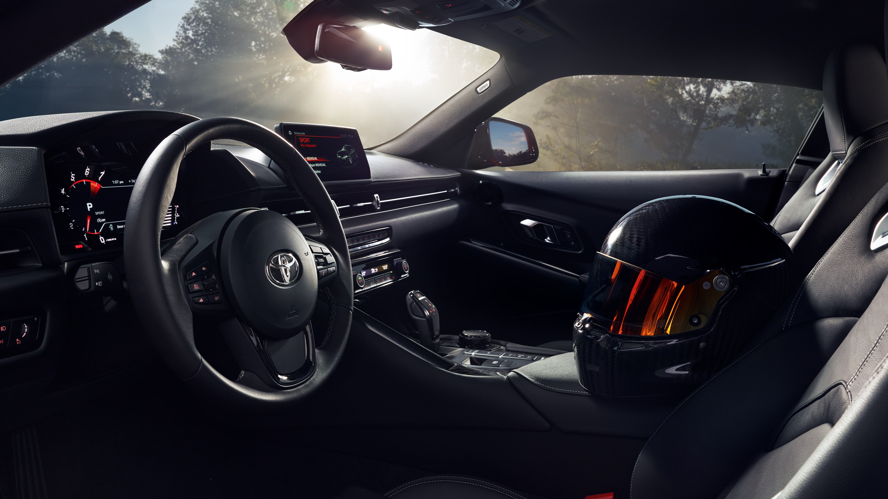
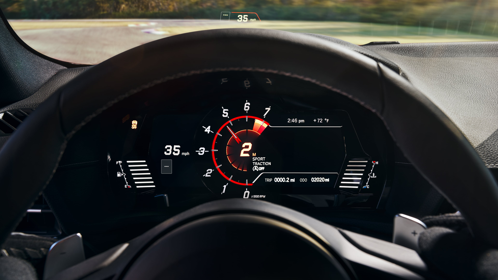

Specifications All New TOYOTA GR SUPRA
- ฐานล้อสั้น, ท่ายืนมั่นคง และจุดศูนย์ถ่วงต่ำ ตัวแปรสำคัญซึ่งส่งผลโดยตรงกับการบังคับควบคุม (Handling) ที่ว่องไว มั่นใจ (สังเกตได้จากรถสปอร์ต Porsche ก็จะฐานล้อสั้น ส่วน Ferrari จะได้ยินคำว่า Berlinetta บ่อย ๆ เพราะถ้ามี etta ต่อท้ายตีความได้เลยว่าสั้นหรือเล็กกว่าปกติ รถแข่งก็จะใช้ฐานล้อสั้นเป็นส่วนใหญ่ ทั้งนี้เพื่อความว่องไวเป็นพิเศษ)
- ดังนั้น All-new Toyota Supra 2019 จึงมีฐานล้อสั้นกว่า Toyota 86 สปอร์ตรุ่นเล็ก ถึง 100 มม. ภายในมี 2 ที่นั่ง คับแคบตามสไตล์เพียวสปอร์ต เน้นการขับขี่ล้วน ๆ ไม่เน้นโดยสารทางไกลและคุณภาพการขับขี่ (Ride Quality) แบบ สปอร์ตจีที รวมถึงไม่มีพื้นที่ให้เก็บสัมภาระมากนัก
- จุดศูนย์ถ่วงของ All-new Toyota Supra 2019 ต่ำกว่า Toyota 86 ที่ใช้เครื่องยนต์สูบนอนเสียอีก
- All-new Toyota Supra 2019 มีการกระจายน้ำหนักให้ตกลงบนเพลาหน้า-หลัง 50:50 เพื่อความสมดุล เป็นกลางขณะเข้าโค้ง
Exterior ภายนอก

|
ภายนอกถูกติดตั้งไฟหน้า LED พร้อมไฟส่องสว่างเวลากลางวันและไฟเลี้ยวแบบ LED ดีไซน์ไฟหน้าได้รับแรงบันดาลใจมาจาก Supra เจเนอเรชั่นที่ 4, ไฟท้ายแบบ LED พร้อมไฟถอยหลัง LED ติดตั้งแยกบริเวณกันชน, สปอยเลอร์เหนือฝากระโปรงเป็นอุปกรณ์มาตรฐาน เป็นต้น |
Interior ภายใน
|
ภายในห้องโดยสารของ Supra 2019 ถูกออกแบบเพื่อเน้นการใช้งานในชีวิตประจำวัน ติดตั้งมาตรวัดหน้าจอสีความละเอียดสูงแบบ 3 มิติ, หน้าจออินโฟเทนเม้นท์ถูกติดตั้งในตำแหน่งที่อ่านง่าย, สามารถเลือกติดตั้งหน้าจอ Head-up Display เป็นอุปกรณ์เสริมได้, เบาะนั่งคู่หน้าแบบสปอร์ตพร้อมพนักพิงศีรษะในตัว หุ้มด้วยวัสดุ Alcantara ในรุ่น 3.0 และวัสดุหนังในรุ่น 3.0 Premium |
 |
|  |
Engine เครื่องยนต์
Toyota new Supra 2019 รุ่นสูงสุด RZ วางเครื่องยนต์เบนซินแถวเรียง 6 สูบ 3.0 ลิตร อัดอากาศด้วยเทอร์โบแปรผัน Twin Scroll เป็นขุมกำลังขนาด 3 ลิตร เทอร์โบเดี่ยวแบบ Twin Scroll จาก BMW มีพื้นฐานคล้ายกับเครื่องยนต์ที่ประจำการอยู่ใน BMW M2 และ M3/M4 โดยมีปริมาตรความจุ 2,998 ซีซี. ให้กำลังสูงสุด 340 แรงม้า ที่ 5,000 – 6,500 รอบต่อนาที แรงบิดสูงสุด 500 นิวตันเมตร ที่ 1,600 – 4,500 รอบต่อนาที ระบบส่งกำลังใช้เกียร์อัตโนมัติ 8 สปีด ขับเคลื่อนล้อหลัง อัตราเร่งจาก 0-100 กิโลเมตรต่อชั่วโมงทำได้ที่ 4.3 วินาที ความเร็วสูงสุด 250 กิโลเมตรต่อชั่วโมง